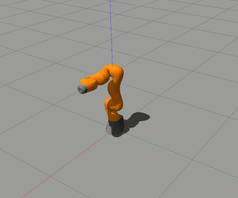
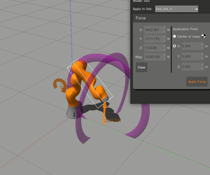
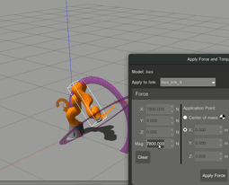
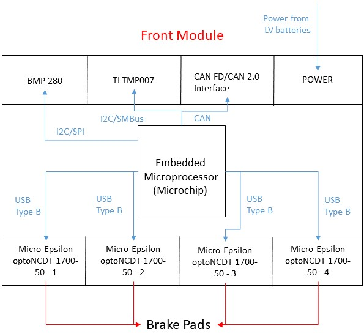

People
Prathamesh Saraf

Prof. Abhishek Sarkar

Prof. Arshad Javed
Spherical Articulated Manipulator
The project focuses on control of an articulated robotic manipulator.
Without Disturbance
With Disturbance
PID Control:


Impedance Control:


Related Publications
People
Prathamesh Saraf
Yash Jangir
Prof. R.N.Ponnalagu
Dynamic Optimal Control of a Quadrotor

The project focuses on stability analysis of a Quadrotor for varied flying conditions.
Related Publications
People
Prathamesh Saraf
Manan Gupta

Prof. Alivelu Parimi
A CNN Approach Towards Self-driving Cars

The project aims at building a level-2 autonomous vehicle which would take the lane markings from an on-board camera and the nearby obstacles from 3 Ultrasonic sensors as input. The input image is processed and a steering angle is obtained.


Related Publications
People
Prathamesh Saraf

Akhil Agnihotri
A Wearable Health Monitoring Device

A wearable device to obtain the heart rate, blood pressure, body temperature, oxygen level, and GPS location of the person. The data will be transmitted to a 2-3km far local base station.


People
Prathamesh Saraf
Rohan Verma
Electronics Subsystem Design, Hyperloop India
[Certificate]

The work aims at designing and building a pod prototype for the Hyperloop SpaceX competition. The Hyperloop India team consists of Mechanical, CFD, Propulsion, Software and Electronics Subsystems. As a member of Electronics subsystems, I:


Related Publications
People
Prathamesh Saraf

Nihal Singh
Plava Kattamuri

Jay Karhade

Ishika Bhattacharya
Prof. Alivelu Parimi